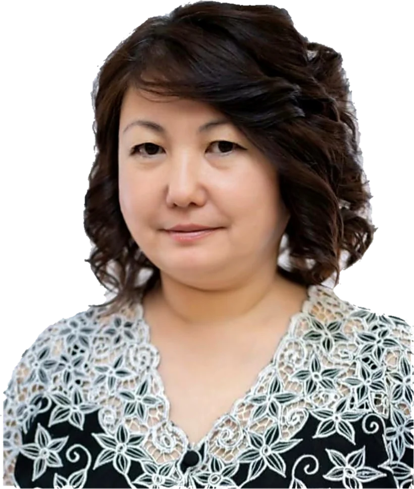
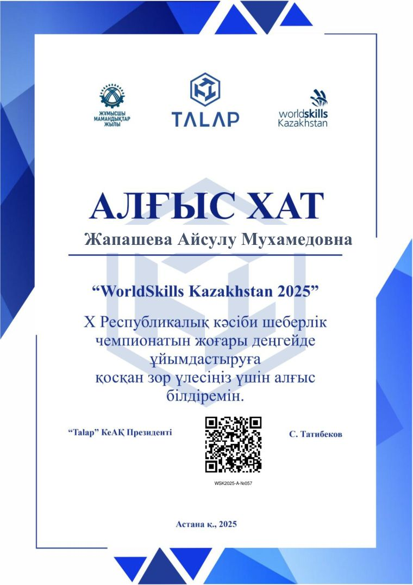
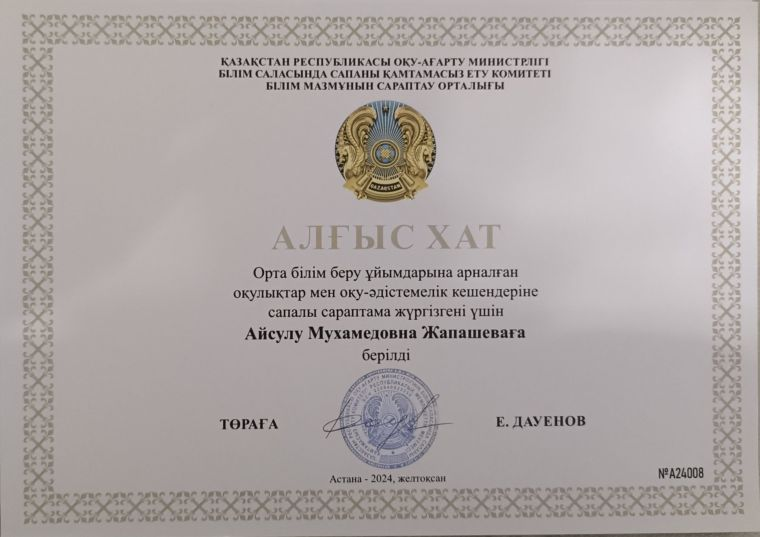
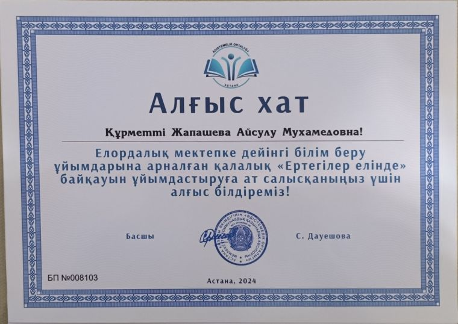
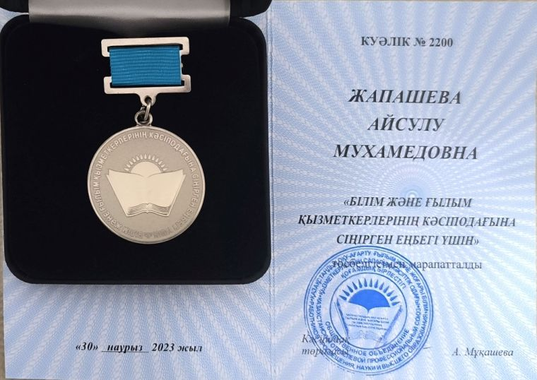
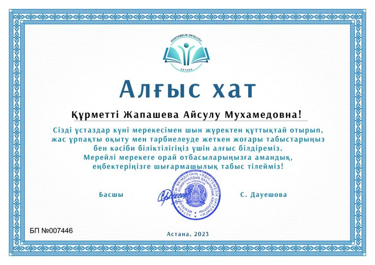
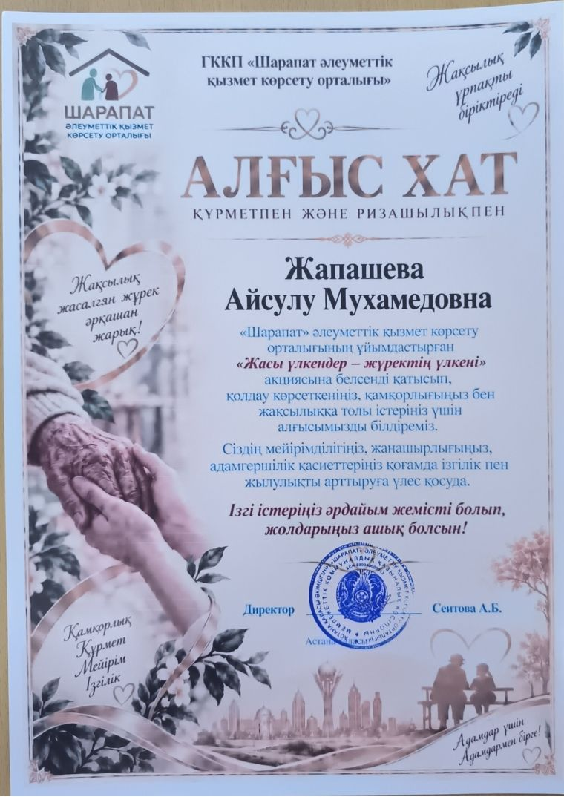

Айсулу
Жапашева
Методист
КГУ «Комплекс „Детский сад-школа-гимназия № 46“»
В современном мире образования методист дошкольной организации — это больше, чем наставник. Это инновационный архитектор и стратегический мозг детского сада.
Методист не просто внедряет нововведения, контролирует воспитательно-образовательный процесс. Он проектирует успех всего педагогического коллектива и в целом дошкольной организации!
- 33
- года в дошкольном образовании
- 16
- лет в должности методиста
- 26
- документов в портфолио

Обо мне
( 01 )За 33 года в дошкольном образовании я прошла путь от воспитателя до методиста и хорошо знаю обе стороны работы детского сада: и то, как строится занятие с детьми, и то, как выстраивается система за ним.
Моя задача — переводить требования программ и стандартов на понятный педагогу язык: помогать планировать, подбирать методики, видеть развитие каждого ребёнка.
Послевузовская подготовка в области психолого-педагогического образования позволяет работать не только с методикой, но и с тем, что за ней стоит: возрастными особенностями детей, профессиональным выгоранием педагогов и отношениями с семьёй воспитанника.
- Педагог-исследователь
- Эксперт учебников и УМК
- Магистр психолого-педагогического образования
Направления работы
( 02 )- 01
Мониторинг качества предоставляемых образовательных услуг
- 02
Совместное определение направления развивающих программ
- 03
Помощь педагогу в изучении интересов детей для организации возможности совместного с родителями выбора развивающих программ для ребёнка
- 04
Помощь педагогу в выявлении точечных проблем в его практике
- 05
Оказание методической помощи педагогам в организации игровых зон, подборе учебных ресурсов
- 06
Методическое сопровождение процесса воспитания и обучения детей
- 07
Совершенствование практики педагогов через предоставление возможности обмена опытом, повышение квалификации, самореализацию
- 08
Внедрение инновационных подходов
Таким образом, методист формирует единую образовательную стратегию, обеспечивает профессиональное развитие педагогов и создаёт условия для полноценного функционирования дошкольной организации.
Методист тесно взаимодействует с педагогическим коллективом, родителями воспитанников и руководством, создавая систему методической работы.
Достижения
( 03 )Для методиста главный показатель — не собственные грамоты, а то, чего достигают педагоги, которых он сопровождает.
Педагог комплекса №46
Лучший педагог
2023 года
Республиканское звание, присвоенное Министерством просвещения РК воспитателю детского сада, где ведётся методическая работа.
Достижения педагогов
- 2023
Звание «Лучший педагог 2023 года»
Министерство просвещения Республики Казахстан
- 2023
Победитель городского этапа конкурса «Үздік педагог»
Управление образования города Астаны
- 2023
III место республиканского конкурса «Панорама педагогических идей»
Национальный центр повышения квалификации «Өрлеу»
Собственный статус и награды
- 2026
Аттестационная комиссия Министерства просвещения РК
Аттестация педагогов дошкольных организаций и категории «педагог-мастер»
- 2026
Эксперт в базе Республиканского центра экспертизы содержания образования
Регистрация действует до 2031 года
- 2024
Благодарственное письмо Министерства просвещения РК
За качественную экспертизу учебников и учебно-методических комплексов
- 2023
Медаль «За заслуги перед профсоюзом работников образования и науки»
Казахстанский отраслевой профессиональный союз
Портфолио
( 04 )26 документов в семи разделах: образование, повышение квалификации, награды, научно-педагогическая деятельность, работа в комиссиях и достижения педагогов.

Благодарственное письмо · 2025WorldSkills Kazakhstan 2025
За большой вклад в организацию X Республиканского чемпионата профессионального мастерства. НАО «Talap», WSK2025-A-№057.
PDF · 1 страница ↗
Благодарственное письмо · декабрь 2024За качественную экспертизу учебников и УМК
Комитет по обеспечению качества в сфере образования Министерства просвещения РК, Центр экспертизы содержания образования. № А24008.
PDF · 1 страница ↗
Благодарственное письмо · 2024Городской конкурс «Ертегілер елінде»
За вклад в организацию конкурса для столичных организаций дошкольного образования. Методический центр города Астаны, БП №008103.
PDF · 1 страница ↗
Медаль · 30 марта 2023«За заслуги перед профсоюзом работников образования и науки»
Казахстанский отраслевой профессиональный союз работников образования, науки и высшего образования. Удостоверение №2200.
PDF · 1 страница ↗
Благодарственное письмо · 2023За успехи в обучении и воспитании
Ко Дню учителя — за высокие успехи в обучении и воспитании молодого поколения. Методический центр города Астаны, БП №007446.
Изображение ↗
Благодарственное письмо · «Шарапат»Акция «Жасы үлкендер — жүректің үлкені»
ГККП «Шарапат» — центр оказания социальных услуг, Астана. За активное участие в акции, поддержку и заботу о пожилых людях. Директор А. Б. Сеитова.
PDF · 1 страница ↗Контакты
( 05 )- Телефон
- +7 700 599 58 09
- Почта
- aija-74@mail.ru
- Город
- Астана, Казахстан